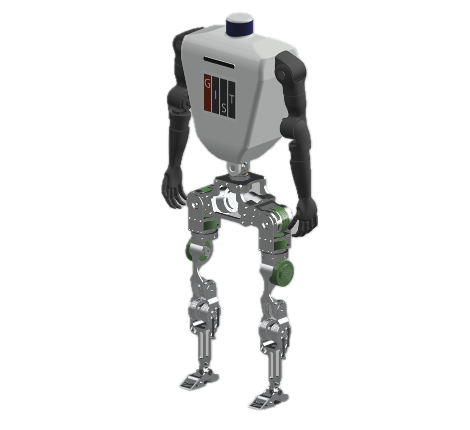
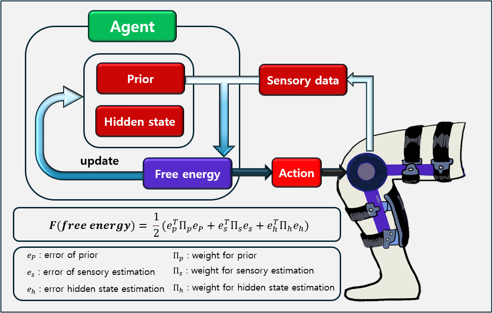
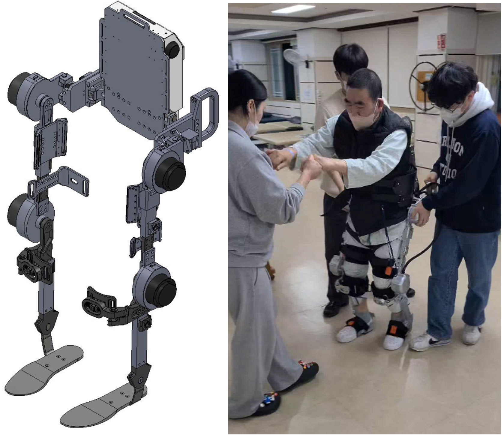

Funding Agent: National Rehabilitation Center, Ministry of Health and Welfare of South Korea (보건복지부 국립재활원)
This project aims to develop a modular upper limb rehabilitation robot for patients with central nervous system disorders, such as those with brain lesions. The project seeks to create a single device capable of rehabilitating various joints through interchangeable modules, supported by AI-driven personalized training programs and a large language model (LLM)-based chatbot for effective user engagement. The research will progress through conceptual design, development of joint-specific modules, creation of adaptive control algorithms, and integration of user-friendly interfaces, culminating in usability evaluations and commercialization planning. The ultimate goal is to address the limitations of current rehabilitation devices—such as high cost, limited mobility, and complex operation—by providing a versatile, intelligent, and accessible solution that enhances upper limb function and rehabilitation outcomes for patients.
Funding Agent: GIST

This project focuses on developing AI-based human-robot collaboration models for extreme environments such as polar regions and space. The main objectives are to build a simulation platform (using tools like MuJoCo and Cosmos AI) that realistically mimics harsh conditions—such as low temperatures, high radiation, and limited resources—and to design AI models (leveraging reinforcement learning and neuroscience principles) that enable robust, adaptive human-robot interaction.
Over two years, the project will first develop and train these models in simulation, then implement and test them on a humanoid robot prototype, evaluating performance in both virtual and physical extreme environments. The expected outcomes include safer, more efficient mission execution in hazardous settings, cost and time savings through pre-deployment simulation, and broad applicability to fields such as disaster response and advanced industry.
Funding Agent: Ministry of Trade, Industry and Energy
This project is a five-year project to foster advanced talent in the shipbuilding industry, focusing on the development of "First Mover" master's and doctoral experts in areas such as zero-emission technologies, AI convergence, and future ship design. The project emphasizes Korea-U.S. collaboration, aiming to bridge the gap in high-value, eco-friendly, and digital shipbuilding through specialized education, industry-academia projects, and employment support. It addresses the urgent need for skilled professionals due to rapid technological shifts, environmental regulations, and workforce shortages, proposing targeted curricula and hands-on training to ensure global competitiveness. As a team working on robotics and AI, we recognize the alignment of this initiative with our expertise, particularly in AI-driven innovation and smart maritime solutions, and see significant opportunities for collaboration and impact in the evolving shipbuilding sector.
Funding Agent: National Rehabilitation Center, Ministry of Health and Welfare of South Korea (보건복지부 국립재활원)

This project aims to develop a controller to control the powered lower knee exoskeleton using FEP theory (Free energy principle). FEP is the theory that unifies motor control/perception/learning by minimizing the free energy. The FEP has several advantages over existing methods. In the case of perception, FEP reduces the effect of noise or delays only considering free energy that depends on observed variables and prior about noise. This allows the system to estimate hidden states or filter noise with asmall delay. In addition, FEP needs a small amount of time compared to conventional optimization methods for generating control input and doesn’t need any trained complex learning model (CNN, RNN, etc) to adapt to the environment in which the agent exists. We are trying to apply the FEP to a knee exoskeleton controller to utilize these advantages. In further research, we will apply an FEP-based controller to various cases.
Funding Agent: National Rehabilitation Center, Ministry of Health and Welfare of South Korea (보건복지부 국립재활원)

Our group is leading a project aimed at developing an AI-based ground walking exoskeleton robot for hemiplegic walking rehabilitation. Our primary role is the development of control technology for the effective operation of this innovative exoskeleton. In this project, we are conducting technical research on data mapping with and without the use of a walker, trajectory tracking control based on gait data, and compliance control for rehabilitation of the affected and normal sides of gait. The goal of this project is to develop a controller optimized for the rehabilitation of hemiplegic patients, positively impacting their lives.